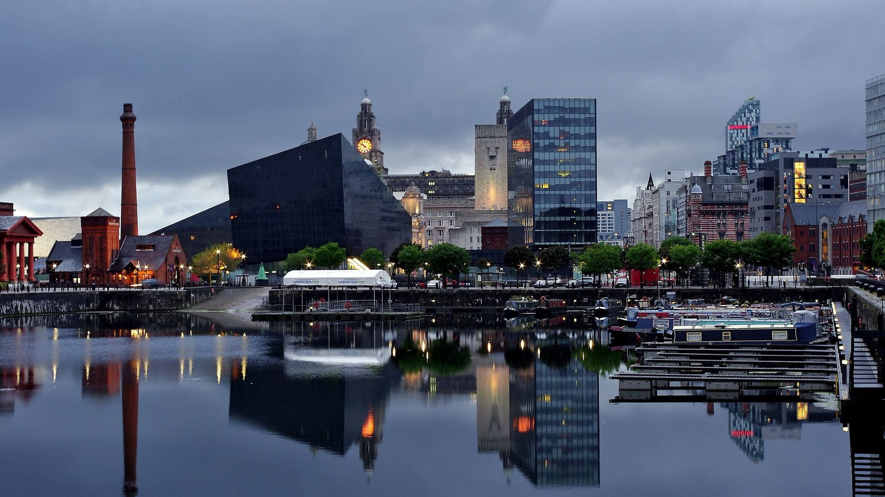

I was born in Brazil , where my family still lives today (Dad and Mom). I was raised in a city called Balbinos in the interior of São Paulo. You can know my small town by clicking HERE (Balbinos Website).
I finished high school at a school called "DR ALFREDO PUJOL in Pirajuí city
I attended two Universities in the city of BAURU . First called USC in 2010 and the second called UNIP in 2016 .
USC (Universidade do Sagrado Coração)
UNIP (Universidade Paulista).
In 2016 I decided to leave my studies and come to live in Europe , more precisely in England where I live today with my Family in Liverpool.
Liverpool City.
Here are some of the activities I love to do the most.
Paris 2019.